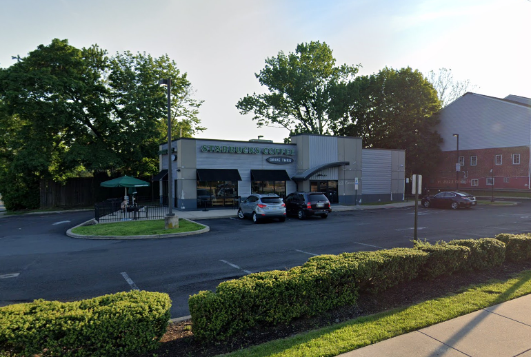
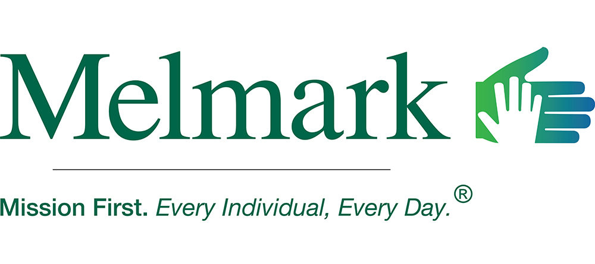
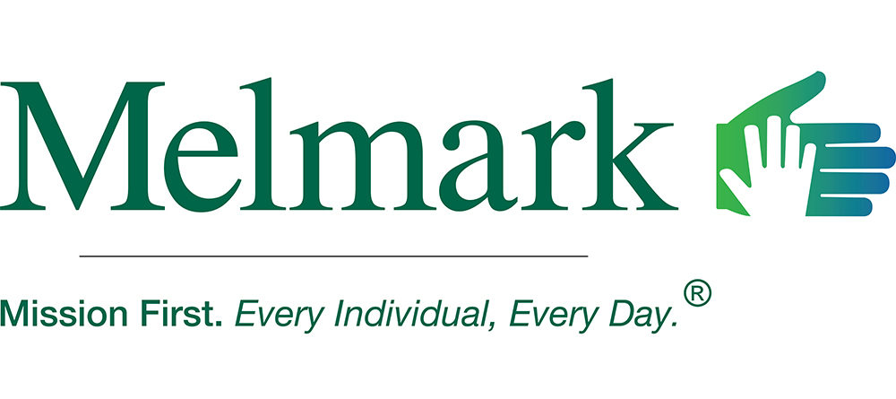

Big People Jobs and the Universe Telling Me to Sit Down
So I graduated in 2013 from Temple University (Go Owls! I guess. I'm not really much of a sports person) with a Bachelor's of Arts in Psychology. I had full intentions of becoming a High School Counselor, wanting to be the person I needed in high school, but uh, as you'll see that never really happened. Which is a shame, but is probably for the better to be quite honest.

My actual first job out of school was working at a local Starbucks as a barista full time. Finding work in Psychology was taking a long time, and after using the summer to help my mother with her recovery from a double knee surgery, the start of looming student loan payments was upon me and I needed something. The work was fine. I got to learn more about coffee and found a love for making the drinks (though I usually ran the drive-thru instead of making the drinks myself), but I knew I couldn't stay there forever. I had a degree, I was going to use it gosh darn it.
My now Sister-In-Law helped me find something with the company she worked for, what was then called Community Education Center Inc. It was a company that focused on helping folks re-enter society after being in prison through halfway houses and inpatient and outpatient centers for substance abuse.
It was also a place I was sorely underqualified to work in. I was brought on as a Counselor Assistant since I only had a BA, and was working with parolees in North Philadelphia just outside of Kensington. I quickly realized there was nothing I could teach the population we worked with. I was just some kid talking with people who were twice or three times my age, and who had seen way more than I ever had. Besides, I wanted to work with kids anyway. So I kept looking.
I eventually found something else in a company called Comhar. This position was one that focused on working with kids in school and in the home as a Therapeutic Staff Support. I would help and observe as the kiddo's file dictated, marking down any progress they made and turning in my work at the end of the week. It didn't pay much, and some cases darn near broke my heart, but I liked working with them. Then my very good friend at the time was heading up to Massachusettes for graduate school.
She needed a roommate to be able to stay up by Boston (ah the times before Working From Home and doing coursework solely online), and some personal things at home made me want to move, so I opted to go with her and find work in Massachusettes. 

We moved up to Beverly, MA and I found a position with a company called Melmark working with children with varying levels of autism and learning disabilities in a residential program. This, uh. This didn't go well. I hurt my ankle during orientation while learning the skills we needed to keep ourselves and the kids safe. It seemed like a sprain at the time, and I was able to walk again within a few weeks (with a great deal of pain, but I could do it) and was brought back to finish orientation and start working. The work, sadly, didn't mesh well with me. I was too nervous and with other mounting issues with my roommate, I had a small breakdown and had to leave Massachusettes and return to Philadelphia.
It was during my initial recovery back in Philadelphia that several things came into focus:
- My ankle was not sprained. Something was very wrong with it.
- I didn't think I could handle another job in the psychology field anymore.
- Oh god I needed to find work doing something.™

 My Dad ended up injuring the same ankle so we got to go to the doctor together.
My Dad ended up injuring the same ankle so we got to go to the doctor together.So I had a lot of time to job search. Just before my recovery time was up and I was finally able to start walking around again, I got a message from my dad's cousin. She said that her company was hiring on temps to do data entry, and if I did well it was likely I would get hired on full time. I jumped at this chance, and after the interviewing and orientation process, I was able to start working at my current company, MMIT, in August of 2016. By February of the next year I was hired on full time for slightly more complicated data entry.
In the 8 years that I've worked here I've gone from data entry, to complicated data entry, to manual software quality assurance, to a business analyst, to my current position as a Technology Liaison. I work with our development and product team to help communicate user needs to them, and then explain what development and product have implemented to the user so they understand what they are working with. On top of this, I manage spreadsheets that monitor the maturity of our internal software, run UAT for our release cycles to reduce the amount of bugs that are created, and help answer questions users may have about the technology either in DMs or through demos.